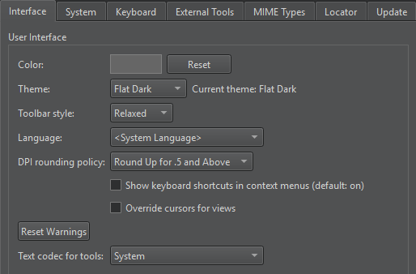

Set high DPI scaling
The operating systems that Qt Creator supports implement high dots-per-inch (DPI) scaling at varying levels. Therefore, Qt Creator handles high DPI scaling differently on different operating systems:
- On macOS, Qt Creator forces high DPI scaling, which means that it allows Qt to use the system scaling factor as the Qt Creator scaling factor.
- On Linux, Qt Creator leaves it to the user to enable high DPI scaling because the process varies so much on different distributions and windowing systems that it cannot be reliably done automatically.
Setting the scale factor or DPI to the exact physical display DPI may not give good visual results due to the fractional scaling involved. Rounding the scale factor to 25% increments can improve the results.
To set the DPI rounding policy:
- Select Preferences > Environment > Interface.

- In DPI rounding policy, select an option to round DPI up or down.
- Restart Qt Creator to have the change take effect.